Chapter 1: Examining Distributions
Expanded from Statistics_Chapter1_Examining_Distributions.pdf (22 pages) · View original handwritten pages
Before fitting a model or running a hypothesis test, we need to understand what the data actually look like. This first chapter follows the handwritten notes through the three pillars of single-variable Exploratory Data Analysis (EDA): plotting distributions visually, summarizing center and spread numerically, and approximating regular empirical distributions with smooth Normal density curves.
Prelude: Two Core Strategies for Exploratory Data Analysis
The chapter opens with The Case of the Missing Vans: between 1985 and 1990, a Long Island auto dealer named John McNamara borrowed more than $\$6\text{ billion}$ from General Motors to purchase "customized vans" for overseas export. In December 1990 alone, he borrowed $\$425\text{ million}$ claiming to buy $17{,}000$ customized GM vans in a single month. Yet GM's entire monthly factory production of customized vans was only about $17{,}000$, and total U.S. van exports across all manufacturers were just $2{,}123$ for the entire year of 1990. Checking baseline counts and distributions immediately exposed the fraud.
- One variable first, then relationships: Begin by examining each variable by itself. Only after you understand the individual distributions should you move on to study relationships among the variables.
- Graphs first, then numbers: Begin with a graph to see the overall pattern and spot anomalies, and then add numerical summaries of specific aspects of the data.
1.1 Displaying Distributions with Graphs
A variable's distribution tells us what values the variable takes and how often it takes each value. Which graph we choose depends on whether the variable is categorical (places an individual into one of several groups) or quantitative (takes numerical values for which arithmetic operations like averaging make sense).
Categorical Variables: Bar Graphs, Pie Charts, and Pareto Charts
When the National Highway Traffic Safety Administration investigated fatal rollovers involving Firestone tires, it recorded the distribution of complaints across nine tire models. A bar graph compares the size (count or percentage) of each category using bar heights, whereas a pie chart shows what fraction of the whole ($100\%$) each group forms.
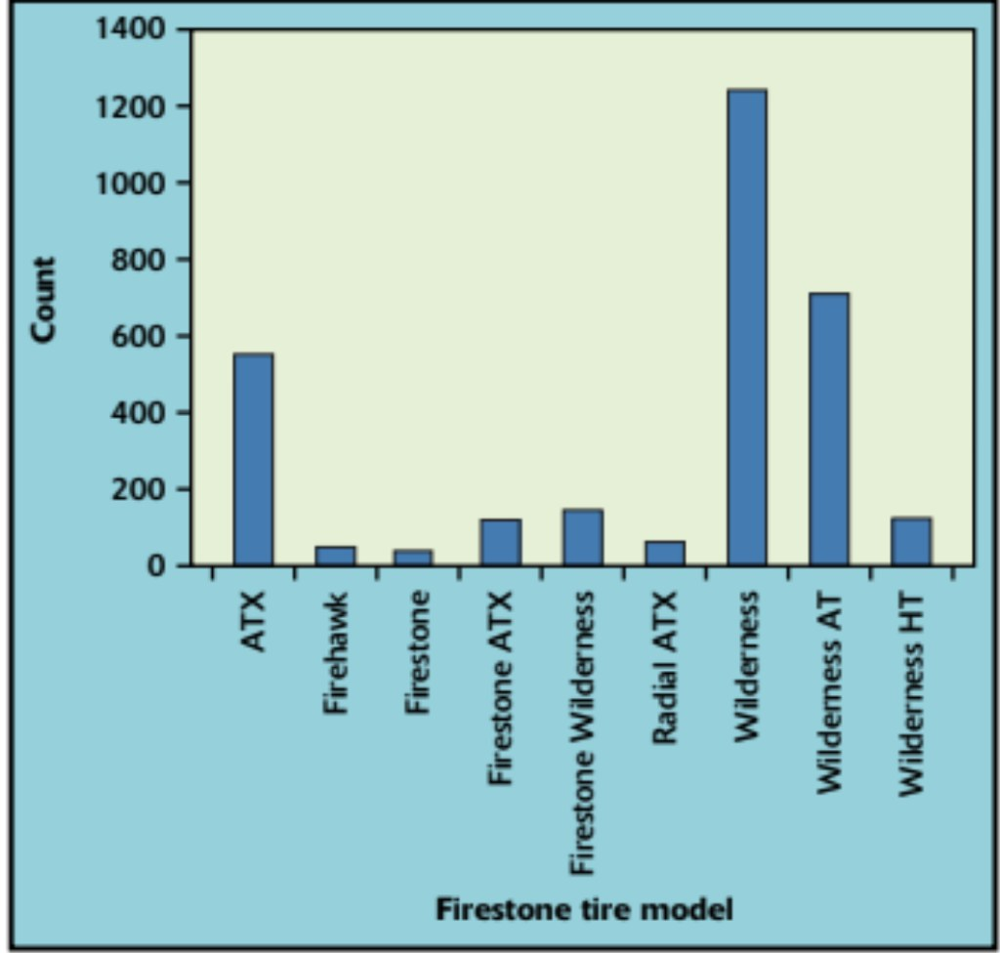
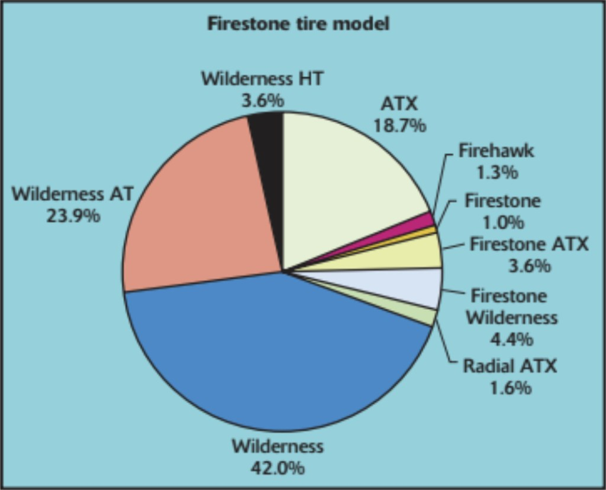
Why bar graphs are more flexible than pie charts: A pie chart requires that all categories form a single mutually exclusive and exhaustive whole. For example, if you want to compare the number of students taking Science and Commerce, you can always draw a two-bar chart—even though some students take Arts instead. A pie chart cannot represent those two groups alone without adding an "Other / Arts" slice so the parts sum to $100\%$.
Pareto chart: A bar graph whose categories are sorted in decreasing order of their counts or percentages (from highest to lowest) is called a Pareto chart. Sorting immediately highlights the dominant categories that account for the majority of outcomes.
Quantitative Variables: Histograms
To examine a quantitative variable across many observations, the notes study the December 2000 unemployment rates across the $50$ U.S. states plus Puerto Rico ($n = 51$ observations, ranging from Connecticut at $1.5\%$ to Alaska at $6.1\%$ and Puerto Rico at $8.9\%$).
First, define the variable carefully: to be counted as unemployed by the Bureau of Labor Statistics, a person must be in the labor force—that is, available for work and actively looking for work:
To construct a histogram of these $51$ unemployment rates:
- Divide the range of data into classes of equal width: Since the rates span $1.5\%$ to $8.9\%$, we choose classes of width $1.0\%$: $$1.0 \le \text{rate} < 2.0, \quad 2.0 \le \text{rate} < 3.0, \quad \dots, \quad 8.0 \le \text{rate} < 9.0.$$
- Count the number of individuals in each class: Tally how many states fall into each bin.
- Draw the histogram: The bars of a histogram must cover the entire range of values with no horizontal space between bars unless a class is genuinely empty ($0$ count). When the recorded values have discrete rounding gaps (such as $1.9\%$ to $2.0\%$), extend the bases of adjacent bars to meet halfway between the two adjacent possible values. Avoid choosing too many narrow classes, which produces a flat "pancake" graph where most bins contain zero or one observation.
| Class (Unemployment %) | Count (States) | Notable Observations |
|---|---|---|
| $1.0\text{ to }1.9$ | $2$ | Connecticut ($1.5\%$), Virginia ($1.9\%$) |
| $2.0\text{ to }2.9$ | $13$ | Massachusetts ($2.0\%$), Colorado ($2.1\%$), New Hampshire ($2.2\%$), … |
| $3.0\text{ to }3.9$ | $21$ | Modal class (peak of the distribution) |
| $4.0\text{ to }4.9$ | $10$ | Alabama ($4.0\%$), California ($4.3\%$), New York ($4.2\%$), … |
| $5.0\text{ to }5.9$ | $3$ | Idaho ($5.0\%$), Louisiana ($5.3\%$), West Virginia ($5.5\%$) |
| $6.0\text{ to }6.9$ | $1$ | Alaska ($6.1\%$) |
| $7.0\text{ to }7.9$ | $0$ | Empty class (produces a visible gap) |
| $8.0\text{ to }8.9$ | $1$ | Puerto Rico ($8.9\%$ — clear high outlier) |
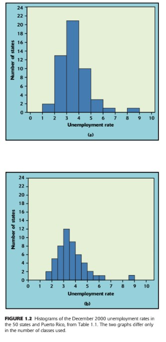
Interpreting Histograms: Shape, Center, Spread, and Outliers
In any graph of data, look for the overall pattern and for striking deviations from that pattern:
- Shape: Does the distribution have a single major peak (unimodal) or multiple peaks? Is it symmetric (left and right sides are approximate mirror images) or skewed?
- A distribution is skewed to the right if the right side of the histogram (containing the larger values) extends much farther out than the left side.
- A distribution is skewed to the left if the left tail extends much farther out than the right side.
- Center: What is the midpoint value that roughly divides the observations in half (around $3.5\%$ for the state unemployment rates)?
- Spread: What is the range of values from smallest to largest (ignoring isolated outliers, $1.5\%$ to $6.1\%$)?
- Outliers: An outlier is an individual observation that falls clearly outside the overall pattern (such as Puerto Rico at $8.9\%$). Some outliers result from recording mistakes (typing $5.9$ as $8.9$); others reflect a genuinely distinct population unit (Puerto Rico is a U.S. territory with a different economic structure than the $50$ states).
Quantitative Variables: Stemplots (Stem-and-Leaf Plots)
For small datasets ($n < 100$), a stemplot is quicker to construct by hand than a histogram and preserves the exact numerical values on the plot itself:
- Separate each observation into a stem (consisting of all but the final rightmost digit) and a leaf (the final digit). Stems may have as many digits as needed, but each leaf contains only a single digit.
- Write the stems in a vertical column from smallest at the top to largest at the bottom, and draw a vertical line to the right of this column.
- Write each leaf in the row to the right of its stem, arranged in increasing order moving outward from the stem.
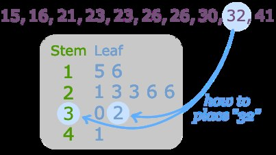
When observations have many digits (such as annual dollar salaries), round the numbers to a few meaningful digits before making a stemplot. And when $n \ge 100$, a histogram is almost always cleaner than a crowded stemplot.
Time Plots: Seasonal Variation vs. Long-Term Trend
Whenever a variable is measured at regular intervals over time (monthly raw-material costs, daily stock prices), the observations form a time series. A time plot always places time on the horizontal scale ($x$-axis) and the measured variable on the vertical scale ($y$-axis), connecting consecutive points with lines to emphasize change over time:
- Seasonal variation: A regular rise-and-fall pattern that repeats itself at a known, fixed interval of time (such as every $12$ months).
- Trend: A persistent, long-term upward rise or downward fall across the time span.
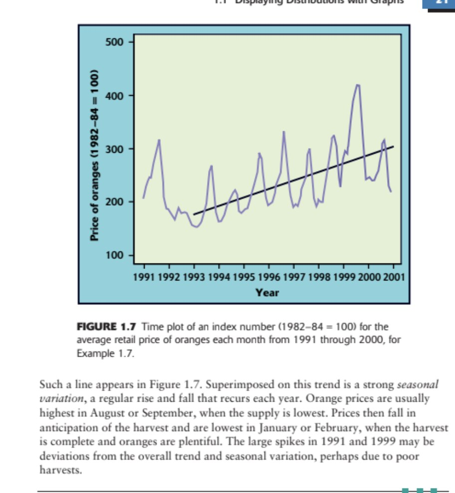
1.2 Describing Distributions with Numbers
To illustrate numerical summaries, the notes examine Case 1.2 (Earnings of Hourly Bank Workers) at "National Bank," which faced a discrimination inquiry. From $1{,}745$ personnel records, random samples were drawn across four race-and-gender groups. Let us follow the notes' complete hand calculations on the sample of $n = 15$ Black female hourly workers:
| Index $i$ | 1 | 2 | 3 | 4 | 5 | 6 | 7 | 8 | 9 | 10 | 11 | 12 | 13 | 14 | 15 |
|---|---|---|---|---|---|---|---|---|---|---|---|---|---|---|---|
| Raw ($) | 16,015 | 17,516 | 17,274 | 16,555 | 20,788 | 19,312 | 17,124 | 18,405 | 19,090 | 12,641 | 17,813 | 18,206 | 19,338 | 15,953 | 16,904 |
| Sorted ($) | 12,641 | 15,953 | 16,015 | 16,555 | 16,904 | 17,124 | 17,274 | 17,516 | 17,813 | 18,206 | 18,405 | 19,090 | 19,312 | 19,338 | 20,788 |
Rounding each of those $15$ earnings to the nearest hundred dollars and using thousands as stems ($12\text{ to }20$) and hundreds as leaves gives the stemplot drawn on page 7 of the notes:
13 |
14 |
15 |
16 | 0 0 6 9
17 | 1 3 5 8
18 | 2 4
19 | 1 3 3
20 | 8
The stemplot immediately reveals a main cluster between $\$16{,}000$ and $\$20{,}800$ and a low outlier at $\$12{,}641$ (stem $12$, leaf $6$).
Measuring Center: The Mean ($\bar{x}$)
The ordinary arithmetic average of $n$ observations $x_1, x_2, \dots, x_n$ is the sample mean $\bar{x}$:
$$\bar{x}_{15} = \frac{16{,}015 + 17{,}516 + \cdots + 16{,}904}{15} = \frac{262{,}934}{15} = \mathbf{\$17{,}528.93}.$$ What if we exclude the single lowest-paid worker ($\$12{,}641$)?
$$\bar{x}_{14} = \frac{262{,}934 - 12{,}641}{14} = \frac{250{,}293}{14} = \mathbf{\$17{,}878.07}.$$
That single low outlier pulls the sample mean down by $\$17{,}878.07 - \$17{,}528.93 = \mathbf{\$349.14}$ (almost $\$350$). A statistical measure is called resistant if extreme observations (or long skewed tails) have very little effect on its value. Because the mean uses the exact numerical distance of every observation, the mean is not a resistant measure of center.
Measuring Center: The Median ($M$)
The median $M$ is the formal midpoint of a distribution: the number such that half the observations are smaller and the other half are larger. To find the median of $n$ observations:
- Arrange all observations in order of size from smallest to largest.
- Compute the center index: $$\text{Location of } M = \frac{n + 1}{2}.$$
- If $n$ is odd, the median $M$ is the single observation at index $(n+1)/2$. If $n$ is even, $(n+1)/2$ falls halfway between the two middle indices, and $M$ is the mean of those two middle observations.
Since $n = 15$ is odd, the median sits at index $(15 + 1)/2 = 8$. Looking at column $8$ of our sorted table:
$$M_{15} = \mathbf{\$17{,}516.00} \quad (\text{with } 7 \text{ observations below and } 7 \text{ above}).$$ What if we drop the outlier $\$12{,}641$ ($n = 14$ remaining)?
Now $n = 14$ is even, so the location is $(14 + 1)/2 = 7.5$—the average of the $7\text{th}$ and $8\text{th}$ remaining sorted values ($\$17{,}516$ and $\$17{,}813$):
$$M_{14} = \frac{17{,}516 + 17{,}813}{2} = \mathbf{\$17{,}664.50}.$$
Comparing the Mean and the Median
Adding the low outlier $\$12{,}641$ pulled the mean down by $\$349.14$, whereas the median moved by only $\$148.50$ (and would not move a single cent further even if $\$12{,}641$ were replaced by $\$100$). The median only cares about the rank order of the middle observations, making it a resistant measure of center.
| Distribution Shape | Relationship Between Mean and Median | Real-World Example from the Notes |
|---|---|---|
| Exactly symmetric | $\text{Mean} = \text{Median}$ (located at the exact center of symmetry) | Idealized Normal curves |
| Skewed to the right | $\text{Mean} > \text{Median}$ (the long right tail pulls the mean above the midpoint) | U.S. existing house prices in 2000: a few mansions pulled the mean to $\$176{,}200$, while the median was $\$139{,}000$ |
| Skewed to the left | $\text{Mean} < \text{Median}$ (the long left tail pulls the mean below the midpoint) | Distributions with a few extreme low outliers |
When should you still use the mean on skewed data? Reports on income and house prices usually quote the median so a few billionaires or mansions don't distort the "typical" household. However, if you are a tax assessor interested in the total value of all houses in a county, you need the mean, because $\text{Total} = n \times \bar{x}$. The median has no direct arithmetic connection to the sum of the observations.
Measuring Spread: Percentiles, Quartiles ($Q_1, Q_3$), and Boxplots
A measure of center alone can be dangerously misleading: two nations with the same median household income are completely different if one has extremes of wealth and poverty while the other has little variation; similarly, a pharmaceutical batch with the right average concentration of active ingredient is unsafe if individual pills vary wildly. Any useful numerical description of a distribution requires both a measure of center and a measure of spread.
The $p\text{th}$ percentile of a distribution is the value such that $p$ percent of the observations fall at or below it (the median is the $50\text{th}$ percentile). The most commonly used percentiles alongside the median are the quartiles, which enclose the middle half ($50\%$) of the data:
- Arrange the observations in increasing order and locate the overall median $M$.
- The first quartile $Q_1$ ($25\text{th}$ percentile) is the median of the observations whose position in the ordered list is strictly to the left of the location of the overall median (the median of the lower half).
- The third quartile $Q_3$ ($75\text{th}$ percentile) is the median of the observations whose position in the ordered list is strictly to the right of the location of the overall median (the median of the upper half).
The overall median $M = \$17{,}516$ is the $8\text{th}$ observation. That leaves $7$ observations strictly to its left and $7$ strictly to its right:
• Lower half ($7$ observations): $12{,}641,\; 15{,}953,\; 16{,}015,\; \mathbf{16{,}555},\; 16{,}904,\; 17{,}124,\; 17{,}274$. Since $n_{\text{low}} = 7$ is odd, its median is the $(7+1)/2 = 4\text{th}$ value:
$$Q_1 = \mathbf{\$16{,}555}.$$ • Upper half ($7$ observations): $17{,}813,\; 18{,}206,\; 18{,}405,\; \mathbf{19{,}090},\; 19{,}312,\; 19{,}338,\; 20{,}788$. Its $4\text{th}$ value is:
$$Q_3 = \mathbf{\$19{,}090}.$$
Notice that $Q_1$ and $Q_3$ are resistant (though not completely immune to large shifts of many points): $Q_1$ would remain $\$16{,}555$ even if the lowest outlier $\$12{,}641$ dropped to $\$1{,}000$.
Combining the quartiles with the median and the extremes gives the Five-Number Summary:
A boxplot turns the five-number summary into a graph: a central box spans from $Q_1$ to $Q_3$ (the middle $50\%$ of the data), a line inside the box marks the median $M$, and lines ("whiskers") extend from the box out to the smallest and largest observations. Boxplots shine when comparing several distributions side by side:
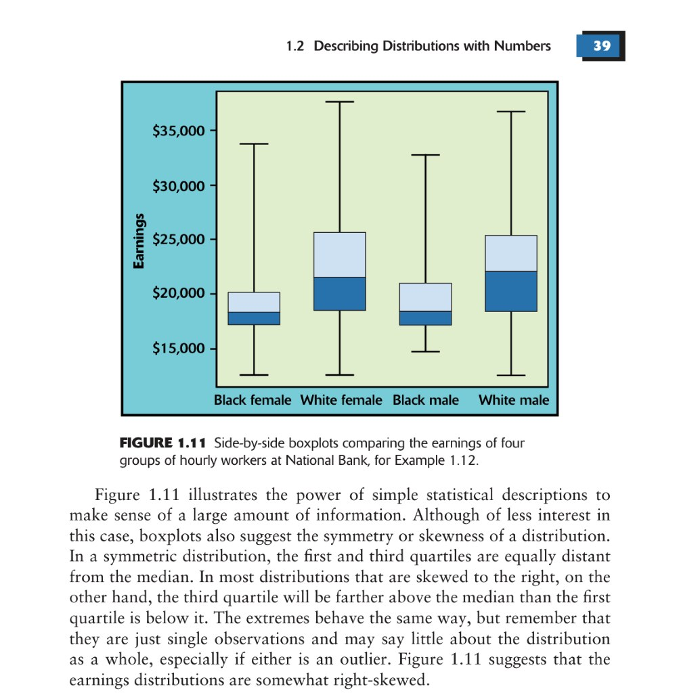
Reading skewness directly from a boxplot: In a symmetric distribution, $Q_1$ and $Q_3$ are equidistant from the median ($Q_3 - M \approx M - Q_1$), and the two whiskers have similar lengths. In a right-skewed distribution (like all four groups in the National Bank plot above), the third quartile $Q_3$ lies much farther above the median $M$ than the first quartile $Q_1$ lies below it ($Q_3 - M > M - Q_1$), and the upper whisker stretches much farther than the lower whisker.
Measuring Spread: Variance ($s^2$), Standard Deviation ($s$), and Degrees of Freedom
When we use the mean $\bar{x}$ as our measure of center, the natural companion measure of spread is the standard deviation $s$, which measures how far observations typically fall from their mean.
For a sample of $n$ observations $x_1, x_2, \dots, x_n$, the sample variance $s^2$ (with Bessel's correction $n-1$) and sample standard deviation $s$ are:
(By contrast, if we have the entire population of size $N$ with true population mean $\mu$, the population variance divides by $N$: $\sigma^2 = \frac{1}{N}\sum_{i=1}^N (x_i - \mu)^2$.)
Worked Calculation from the Notes: The Bureau of Labor Statistics lists average hourly wages (in dollars per hour) for $n = 8$ categories of law-related occupations:
First compute the sample mean $\bar{x}$:
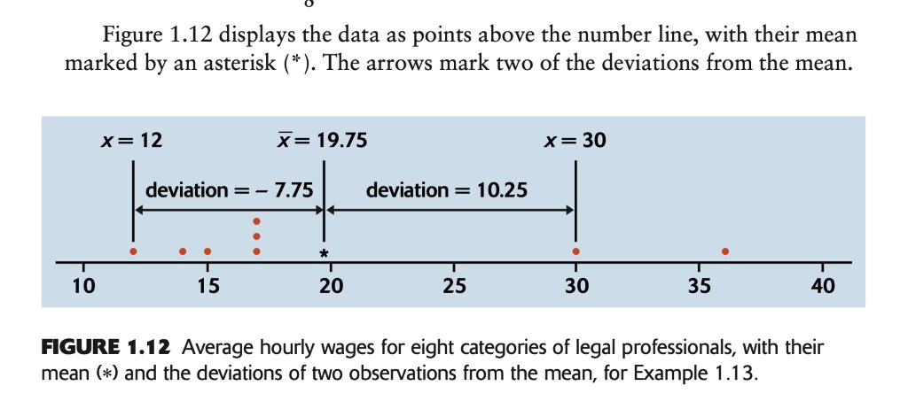
| Observation $x_i$ | Deviation $x_i - \bar{x}$ | Squared Deviation $(x_i - \bar{x})^2$ |
|---|---|---|
| $30$ | $30 - 19.75 = +10.25$ | $(10.25)^2 = 105.0625$ |
| $17$ | $17 - 19.75 = -2.75$ | $(-2.75)^2 = 7.5625$ |
| $36$ | $36 - 19.75 = +16.25$ | $(16.25)^2 = 264.0625$ |
| $14$ | $14 - 19.75 = -5.75$ | $(-5.75)^2 = 33.0625$ |
| $17$ | $17 - 19.75 = -2.75$ | $(-2.75)^2 = 7.5625$ |
| $12$ | $12 - 19.75 = -7.75$ | $(-7.75)^2 = 60.0625$ |
| $15$ | $15 - 19.75 = -4.75$ | $(-4.75)^2 = 22.5625$ |
| $17$ | $17 - 19.75 = -2.75$ | $(-2.75)^2 = 7.5625$ |
| $\sum x_i = 158$ | $\sum (x_i - \bar{x}) = \mathbf{0.00}$ | $\sum (x_i - \bar{x})^2 = \mathbf{507.5000}$ |
$$s^2 = \frac{507.5000}{7} = \mathbf{72.5\text{ (\$/hour)}^2}, \qquad s = \sqrt{72.5} \approx \mathbf{8.5147\text{ \$/hour}}.$$
Why Divide by $n - 1$? Degrees of Freedom
Why does the sample variance $s^2$ divide by $n - 1$ instead of $n$? Because the deviations $x_i - \bar{x}$ around the sample mean $\bar{x}$ always sum to zero:
Because the sum of all $n$ deviations must equal $0$, knowing any $n - 1$ of the deviations automatically determines the final $n\text{th}$ deviation. Only $n - 1$ of the squared deviations can vary freely. We call $n - 1$ the degrees of freedom of the variance estimate: the number of independent pieces of information on which the estimate is based.
- $s$ measures spread around the mean $\bar{x}$ and should be used only when the mean is chosen as the measure of center.
- $s = 0$ only when there is no spread at all (all observations are identical); otherwise $s > 0$.
- $s$ has the exact same units of measurement as the original observations (e.g., dollars per hour), whereas variance $s^2$ has squared units. In finance, the standard deviation of asset returns is the standard quantitative measure of investment risk.
- Like the mean $\bar{x}$, $s$ is not resistant: a few outliers or strong skewness can inflate $s$ dramatically. Always prefer the Five-Number Summary for strongly skewed data or distributions with extreme outliers, and reserve $(\bar{x}, s)$ for reasonably symmetric distributions free of outliers.
1.3 The Normal Distributions
When a sample is large and its histogram is regular, we can summarize the entire distribution with a smooth mathematical model called a density curve.
From Histograms to Density Curves
Consider the city gas mileage (in miles per gallon) of all $856$ model-year 2001 motor vehicles. In the histogram on the left below, the area of each bar represents the proportion of vehicles in that class: the shaded bars for mileage $< 20.0\text{ mpg}$ contain $384$ vehicles, or $384 / 856 = \mathbf{0.449}$ ($44.9\%$). When we adjust the vertical scale so that the total area under the smooth curve is exactly $1$, the area under the curve to the left of $20.0$ is $\mathbf{0.410}$—only $0.039$ away from the discrete histogram proportion.
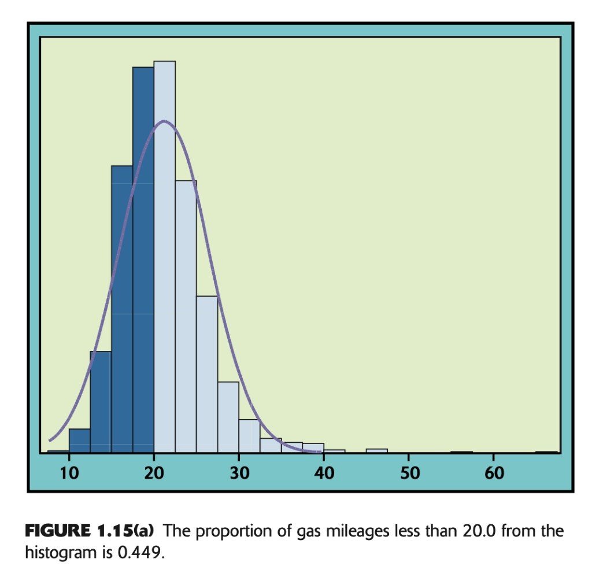
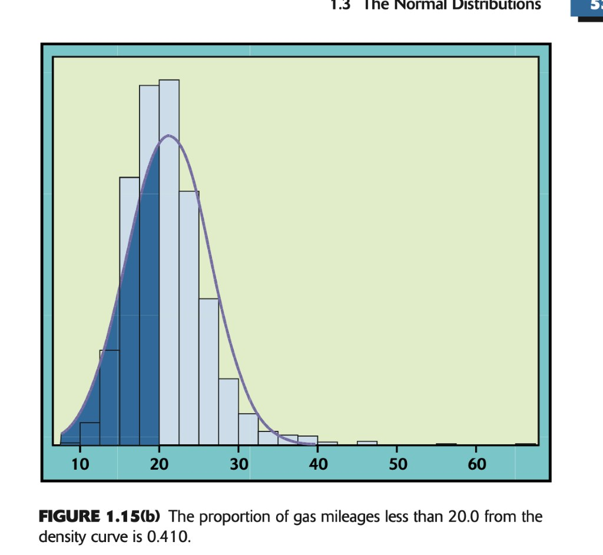
Definition of a Density Curve: A density curve is a smooth curve that:
- Is always on or above the horizontal axis ($f(x) \ge 0$ everywhere), and
- Has total area underneath it equal to exactly $1$. Areas under the curve between any two values represent the proportion of all observations falling in that interval.
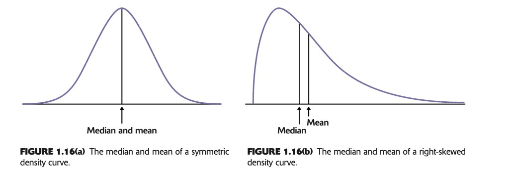
Normal Curves $N(\mu, \sigma)$ and the 68–95–99.7 Rule
Normal distributions are a family of symmetric, single-peaked, bell-shaped density curves. Every Normal distribution is completely specified by two parameters: its population mean $\mu$ (which fixes the center of symmetry) and its standard deviation $\sigma$ (which controls the spread, and equals the distance from $\mu$ to the inflection points where the curve changes curvature). We abbreviate the Normal distribution with mean $\mu$ and standard deviation $\sigma$ as $N(\mu, \sigma)$.
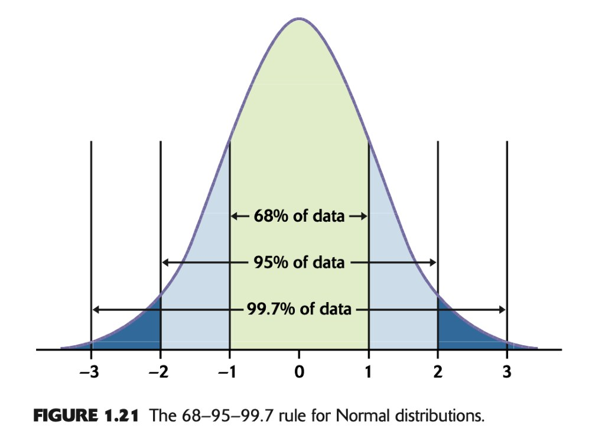
Standardizing Observations ($z$-Scores) and the Standard Normal Table
All Normal distributions become identical if we measure distance from the mean $\mu$ in units of the standard deviation $\sigma$. If $x$ is an observation from a distribution with mean $\mu$ and standard deviation $\sigma$, its standardized value (or $z$-score) is:
A $z$-score tells us how many standard deviations the original observation $x$ falls away from the mean, and in which direction ($z > 0$ above the mean, $z < 0$ below the mean). If $X \sim N(\mu, \sigma)$, then the standardized variable $Z = (X - \mu)/\sigma$ follows the Standard Normal distribution $N(0, 1)$ with mean $0$ and standard deviation $1$.
The weights of $9\text{-ounce}$ potato chip bags are approximately Normal with mean $\mu = 9.12\text{ ounces}$ and standard deviation $\sigma = 0.15\text{ ounces}$. A bag weighing $x = 9.30\text{ ounces}$ has standardized score:
$$z = \frac{9.30 - 9.12}{0.15} = \frac{0.18}{0.15} = \mathbf{+1.2},$$ meaning the bag is $1.2$ standard deviations above the mean.
Worked Example 2 (S&P 500 Annual Stock Returns):
Annual returns on the S&P 500 index follow approximately $X \sim N(12\%, 16.5\%)$. In what proportion of years is the market down (return $X < 0\%$)?
1. State in terms of $X$: We want $P(X < 0)$.
2. Standardize to $Z \sim N(0, 1)$: $$z = \frac{0 - 12}{16.5} = \frac{-12}{16.5} \approx \mathbf{-0.73}.$$ 3. Use the Standard Normal table (which gives area to the left of $z$): $$P(X < 0) = P(Z < -0.73) = \mathbf{0.2327} \quad (23.27\%\text{ of years}).$$ Since total area under the curve is $1$, the market is up ($X \ge 0$) in $1 - 0.2327 = \mathbf{0.7673}$ ($76.73\%$) of years.
Assessing Normality: Normal Quantile (Q–Q) Plots
While histograms and stemplots expose obvious skewness, gaps, or outliers, the most sensitive graphical tool for judging whether a dataset follows a Normal distribution is the Normal quantile plot (or Q–Q plot):
- Arrange the observed data values from smallest to largest and record what percentile of the data each value occupies.
- Find the standard Normal $z$-score corresponding to each of those percentiles (for example, the $5\text{th}$ percentile corresponds to $z = -1.645$; the $50\text{th}$ percentile corresponds to $z = 0$).
- Plot each data point $x$ on the vertical axis against its corresponding Normal score $z$ on the horizontal axis.
Because $x = \mu + \sigma z$ is a linear transformation of $z$, if the data follow any Normal distribution $N(\mu, \sigma)$, the plotted points will lie close to a straight line (specifically, the $45^\circ$ line $x = z$ if the data are already standard Normal, or a line with intercept $\mu$ and slope $\sigma$ in general). Systematic curvature indicates skewness, and isolated points far from the line flag outliers.
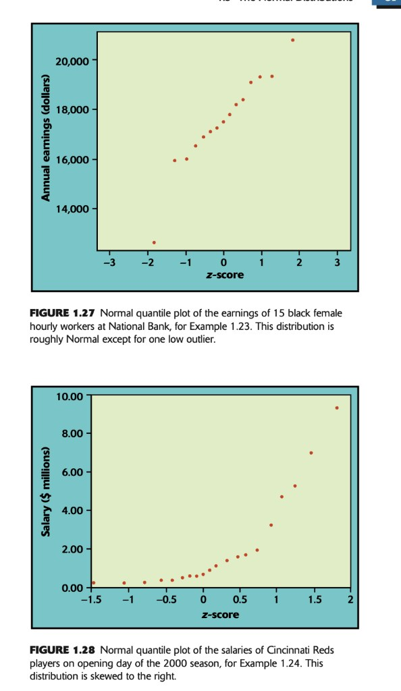
From the Handwritten Notes
Every section above follows the 22 pages of Statistics_Chapter1_Examining_Distributions.pdf. Open any of the original page scans below to compare the handwritten derivations and annotations directly:
View original page 3 — Histogram construction & state unemployment class counts

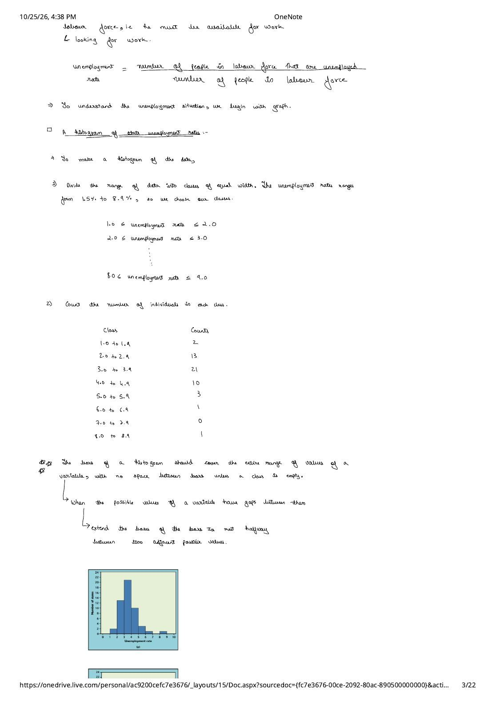
View original page 7 — Bank workers stemplot, sample mean, and outlier sensitivity

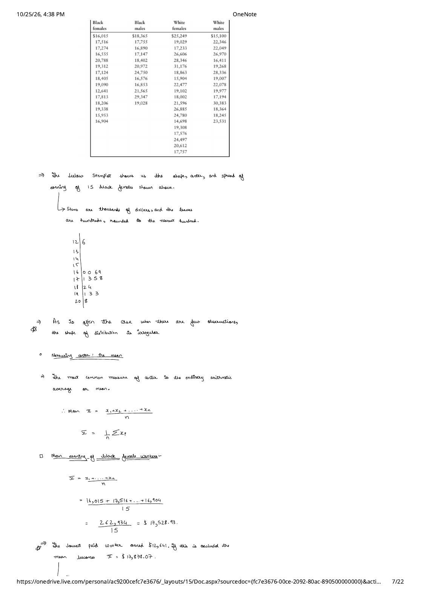
View original page 14 — Variance calculation & proof that deviations sum to zero

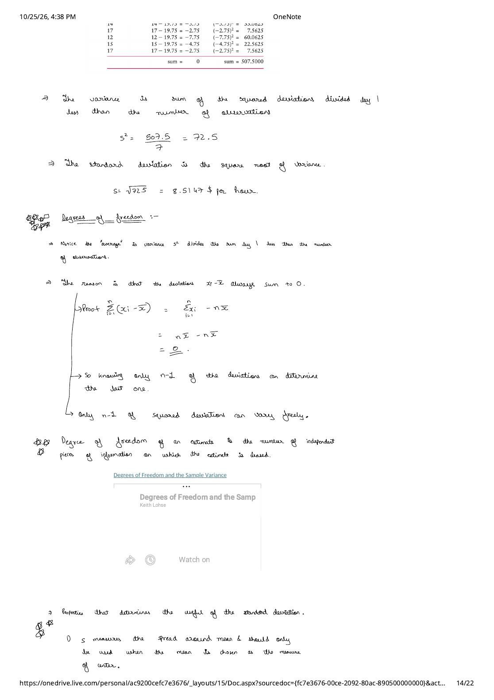
View original page 19 — Standardizing observations ($z$-scores) & Standard Normal $N(0,1)$

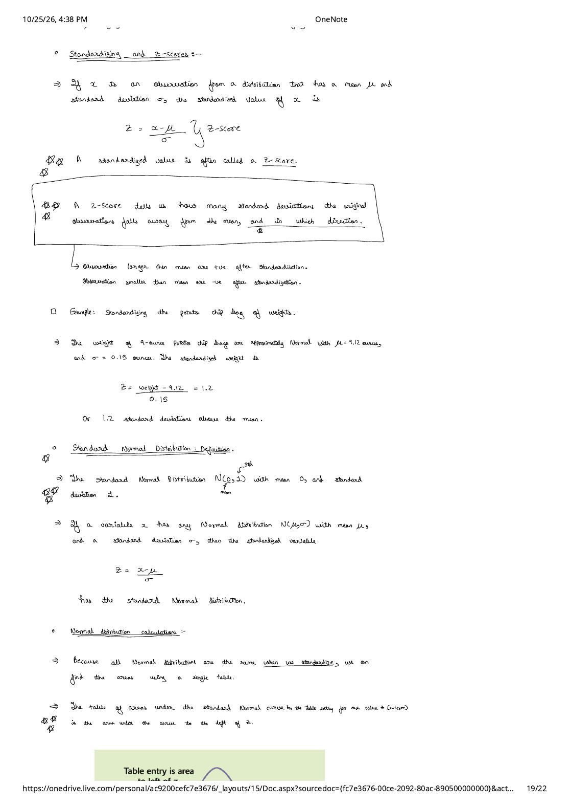
View original page 21 — Constructing and reading a Normal Quantile Plot

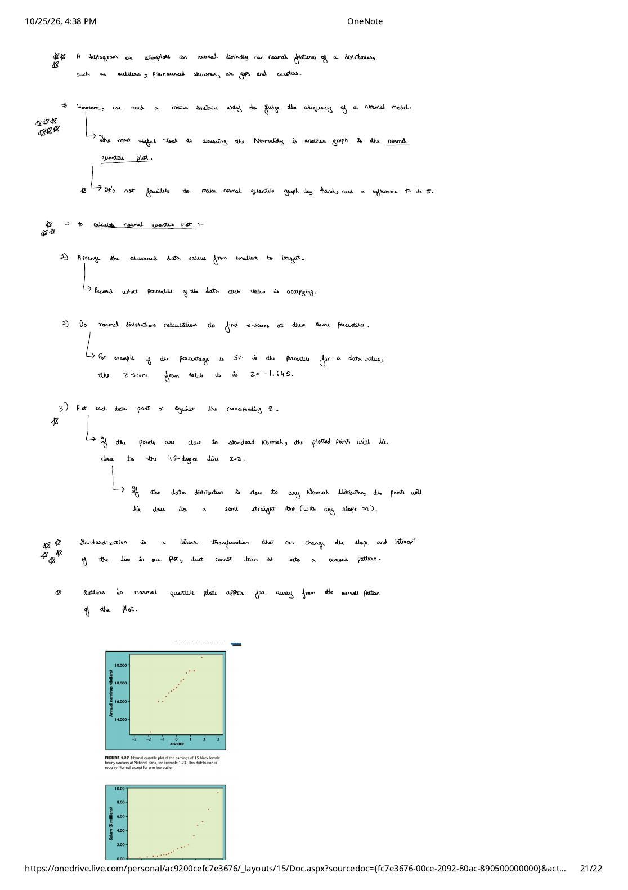